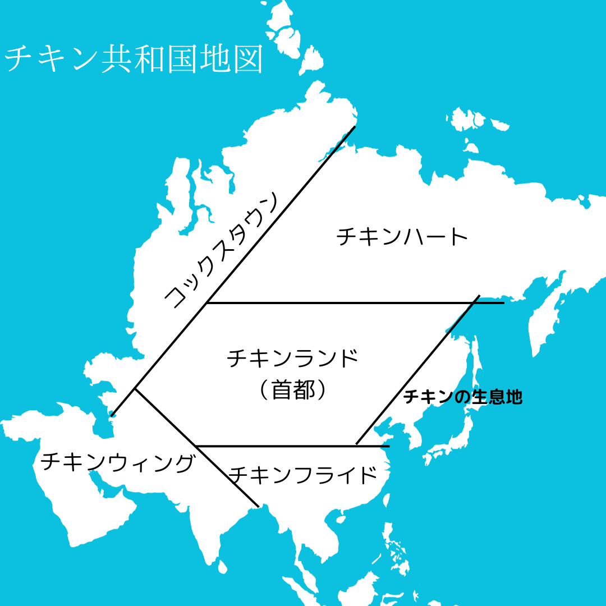

略語の意味: "Skyward Wings Worldwide"
キャッチコピー: "世界へ翔ける空の翼"
2文字コード: "SW"
例:
SW1443 / NH133 / JL3224
PVG → NTR
SW827
FRC → SHA

一、鶏は当れ我らが聖なる獣なり。敬いを以て取り扱わねばならぬ。
二、鶏は生け贄として捧げることは許されぬ。我らは鶏を敬し、感謝の念を込めて食すべし。
三、鶏族に参じし者は、鶏の生産と処理に関する至高の基準を守らねばならぬ。
四、鶏族の衆は、鶏の生産者及び販売業者に対し、公正かつ誠実な取引を行わねばならぬ。
五、鶏の食すに当たり、節度をもって行動せんこと。浪費を避けんことが望ましい。
六、鶏族に参じし者は、鶏の健康と福祉を最優先に考えねばならぬ。安全に飼育・処理された鶏を選びたもうべし。
「ルールを破る者は、厳しい処罰や除名（除外金は与えられぬ）となりしを承知せんこと。しかしそれを承知せん上に、美味しく鶏を享受せんこととす。」
また、以下の事を心得んこととせよ：
「鶏族に参じし者の名を外部の者に伝えんことは絶対に許されぬ。また、鶏族に参じぬ者にも同様に鶏族の者の名を告げんことはあらず。此れは機密なり。鶏族の内でのみ共にすべし。」
チキン族憲法
前文
第1条 - 憲法の目的
第2条 - 憲法の適用範囲
基本的権利と自由
第3条 - 人権の保護
第4条 - 平等権
第5条 - 自由権
第6条 - 言論の自由
第7条 - 集会の自由
第8条 - 宗教の自由
第9条 - プライバシーの権利
国民の義務と責任
第10条 - 忠誠の義務
第11条 - 納税の義務
第12条 - 教育の権利と義務
国家組織
第13条 - 国家の形態
第14条 - 国家元首
第15条 - 国家機関とその権限
第16条 - 国家軍の組織と運用
第17条 - 法の支配
第18条 - 司法の独立
第19条 - 行政の責任
第20条 - 地方自治
第21条 - 国家予算と財政の管理
立法機関
第22条 - 立法府の役割と権限
第23条 - 国民議会の構成と選挙
第24条 - 法律の制定手続き
第25条 - 法案の審議と可決
行政機関
第26条 - 行政府の構成と役割
第27条 - 行政府の長の選出と任命
第28条 - 行政手続きと公務員の任命
第29条 - 行政府の責任と監督
司法機関
第30条 - 司法府の役割と独立性
第31条 - 司法手続きと裁判所の権限
第32条 - 裁判の公正と迅速な行われ方
地方自治体
第33条 - 地方自治体の組織と権限
第34条 - 地方自治体の選挙と代表者の任命
第35条 - 地方自治体の財政と予算の管理
教育と文化
第36条 - 教育の目的と原則
第37条 - 教育制度と学校の運営
第38条 - 文化の保護と振興
経済と社会政策
第39条 - 経済の原則と規制
第40条 - 労働の権利と保護
第41条 - 社会保障と福祉
環境と持続可能性
第42条 - 環境の保護と持続可能な開発
第43条 - 資源の適正な利用と循環
国際関係
第44条 - 外交政策と国際協力
第45条 - 国際条約と国内法の関係
緊急事態と戦争
第46条 - 緊急事態と非常事態の宣言
第47条 - 戦争と武力行使の禁止
憲法改正
第48条 - 憲法の改正手続き
憲法の保護
第49条 - 憲法の尊重と順守
第50条 - 憲法の違憲審査
その他の規定
第51条 - 選挙制度と政治的参加
第52条 - 国旗と国歌
第53条 - 憲法の解釈と裁判所の役割
第54条 - 憲法の公布と効力
附則
第55条 - 憲法の施行日
第56条 - 既存法令の適用
第57条 - 憲法の解釈に関する規定
第1条 - チキン族の目的と原則
第2条 - チキン族の組織と構成
第3条 - チキン族の会員資格と参加要件
第4条 - チキン族のルールの優位性と適用範囲
第5条 - 行動規範と道徳的責任
第6条 - 平等と公正の原則
第7条 - 盗みや詐欺行為の禁止
第8条 - 暴力や虐待の禁止
第9条 - 健康と安全の保護
第10条 - 環境の保護と持続可能性
第11条 - 汚染の防止と廃棄物の管理
第12条 - 財産権と所有権の尊重
第13条 - 契約の履行と法的義務
第14条 - 商業活動と競争の規制
第15条 - 知的財産権の保護
第16条 - 個人情報の保護とプライバシーの尊重
第17条 - コンピューター犯罪の防止
第18条 - インターネットの使用とネットワーキングの規制
第19条 - ソーシャルメディアの利用と情報の共有
第20条 - 教育と研究の重要性
第21条 - 学習環境と教育制度の改善
第22条 - 教育へのアクセスと機会均等
第23条 - 学問の自由と知識の普及
第24条 - 家族の保護と支援
第25条 - 結婚の自由と家族の形成
第26条 - 児童と若者の権利と保護
第27条 - 高齢者の尊厳と福祉
第28条 - 健康と医療の権利と保護
第29条 - 疾病予防と感染症の管理
第30条 - 医療倫理と医療技術の発展
第31条 - 薬物乱用の予防と治療
第32条 - スポーツとレクリエーションの重要性
第33条 - チキン族のスポーツイベントと競技規則
第34条 - チキン族の文化活動と芸術の支援
第35条 - チキン族の伝統と文化の保護
第36条 - 交通と運輸の安全と規制
第37条 - 道路交通法の順守と交通ルールの尊重
第38条 - 公共交通機関の利用と公共の利益
第39条 - 環境に配慮した交通手段の促進
第40条 - 災害の予防と対策
第41条 - 緊急事態と非常事態の対応
第42条 - 防災意識の向上と災害救援活動
第43条 - 災害復興と被災者支援
前文
チキン族憲法は、チキン族の国民の権利と自由を保護し、チキン族の繁栄と発展を促進することを目的として制定された。
第1条 - 憲法の目的
この憲法の目的は、チキン族の国民の権利と自由を保護し、チキン族の繁栄と発展を促進することである。
第2条 - 憲法の適用範囲
この憲法は、チキン族の全土およびチキン族の国民に適用される。
第3条 - 人権の保護
チキン族の国民は、すべての人権を有する。
第4条 - 平等権
チキン族の国民は、すべて平等である。いかなる差別も許されない。
第5条 - 自由権
チキン族の国民は、すべて自由権を有する。
第6条 - 言論の自由
チキン族の国民は、すべて言論の自由を有する。
第7条 - 集会の自由
チキン族の国民は、すべて集会の自由を有する。
第8条 - 宗教の自由
チキン族の国民は、すべて宗教の自由を有する。
第9条 - プライバシーの権利
チキン族の国民は、すべてプライバシーの権利を有する。
以下略する。(覚えなくていい)
航空会社名: "SWW Airlines"
略語の意味: "Skyward Wings Worldwide"
キャッチコピー: "世界へ翔ける空の翼"
2文字コード: "SW"
例:
SW1443 / NH133 / JL3224
PVG → NTR
SW827
FRC → SHA
*第一節*
我らチキン族は、
誇り高き鳥の民。
羽ばたき続けよう、
大空へと。
*コーラス*
チキン族よ、団結しよう、
未来のために。
平和と調和を築き、
自然と共に歩もう。
*第二節*
豊かな大地に根ざし、
我らは生きる。
自然の恵みに感謝し、
未来へとつなげよう。
*コーラス*
チキン族よ、団結しよう、
未来のために。
平和と調和を築き、
自然と共に歩もう。
*ブリッジ*
我らの歌を響かせよう、
世界中に。
チキン族の精神を伝え、
希望の光となろう。
*コーラス*
チキン族よ、団結しよう、
未来のために。
平和と調和を築き、
自然と共に歩もう。
*第三節*
未来は我らの手にあり、
共に歩んでいこう。
チキン族の誇りを胸に、
新たな道を切り拓こう。
*コーラス*
チキン族よ、団結しよう、
未来のために。
平和と調和を築き、
自然と共に歩もう。
*アウトロ*
チキン族よ、永遠に、
この歌を歌い続けよう。
我らの絆と希望を、
未来へとつなげよう。
チキン族のメンバーは、以下のルールを遵守することに同意します。
1. ルールの遵守: チキン族のメンバーは、チキン族のルールを遵守し、これらのルールに従って行動します。
2. 誠実な行動: チキン族のメンバーは、誠実さ、正直さ、信頼性を持って行動します。嘘や欺瞞の行為は避け、真実を尊重します。
3. 他者への敬意: チキン族のメンバーは、他人に対して敬意を払い、相互の尊重を促進します。差別や侮辱的な言動は避けます。
4. 安全と健康の保護: チキン族のメンバーは、自身の安全と健康に責任を持ちます。安全な環境で活動し、他のメンバーの安全を確保します。
5. 個人情報の保護: チキン族のメンバーは、他のメンバーの個人情報を尊重し、プライバシーを守ります。情報の共有は適切な許可や同意の下で行われます。
6. 環境への配慮: チキン族のメンバーは、環境への配慮を重視し、持続可能な行動を促進します。自然資源の節約や環境保護に努めます。
7. 法令の遵守: チキン族のメンバーは、法令と規制の遵守を重視します。違法行為や不正行為は絶対に行わず、法的な責任を遵守します。
8. チキン族の目的への貢献: チキン族のメンバーは、チキン族の目的に向けて貢献することを心がけます。協力し、共同の目標達成に向けて努力します。
環境保護は、地球上の自然環境や生態系を保護し、持続可能な未来を実現するための取り組みです。以下に環境保護に関するわたしたちの取り組みを示します。
1. 自然資源の保護: 環境保護の重要な側面は、自然資源の保護です。森林、河川、湖沼、海洋などの生態系を保護し、
地球上の生物多様性を維持します。適切な管理や保全活動を通じて、生物の生息地を守ります。
2. 持続可能な資源利用: 環境保護は、資源の持続可能な利用も含みます。過剰な消費や浪費を避け、再生可能エネルギー
やリサイクルなどの取り組みを通じて資源の節約を促進します。
3. 温室効果ガスの削減: 地球温暖化や気候変動への対策も環境保護の一環です。温室効果ガスの排出を削減し、持続可能な
エネルギー源の利用を促進します。代替エネルギーへの移行や省エネルギーの普及、森林の植林などが取り組まれます。
4. 環境教育と意識啓発: 環境保護は、人々の意識や行動の変革にも関わります。環境教育や意識啓発活動を通じて、
持続可能な生活や環境に対する理解を深めます。地域のコミュニティや学校での啓発活動やイベントが行われます。
5. 国際協力と法規制: 環境保護は国境を越えた問題であり、国際的な協力が重要です。国際的な環境保護協定や法規制
の制定・遵守、科学的な研究やデータ共有が行われます。また、国内の環境法や規制を整備し、環境への負荷を減らすため
の措置が取られます。
チキン族は長い歴史の中で、民主主義と平和主義の理念に基づいた社会を築いてきました。
彼らの社会は協力と共同体の精神に基づいており、個々の発展と共存を重視しています。
起源: チキン族の歴史は、古代の集落から始まります。
最初は小さな農耕共同体であり、畑作や家畜の飼育を通じて生計を立てていました。
彼らは自然との調和を大切にし、持続可能な資源利用を追求しました。
民主主義の成立: チキン族の社会では、民主主義の原則が徐々に発展していきました。
集会や協議の場で意見を交換し、重要な決定は共同で行われました。
彼らは個々の権利と自由を尊重し、平等な参加と意見表明を奨励しました。
平和主義の実践: チキン族は平和と対話を重視し、紛争解決には暴力を用いることを避けました。
対立が生じた場合でも、仲裁者や調停の役割を果たす者が登場し、和解と妥協を促進しました。
平和を維持するために、教育や啓発活動が重視され、互いを尊重し、相互理解を深める努力が行われました。
成長と国家形成: 時が経つにつれて、チキン族の共同体は成長し、複数の集落が連携して国家を形成しました。
国家は民主的な政府形態を採用し、代表者が選挙によって選ばれました。法の支配と公正な司法制度が確立され、個人の権利と自由の保護が重視されました。
外交と国際協力: チキン族の国家は隣接する国々との外交関係を築き、平和と協力を促進しました。
紛争の解決には対話と交渉が優先され、戦争や侵略の行為は避けられました。
チキン族は国際的な組織や協定に参加し、環境保護や人道支援などの取り組みに積極的に関与しました。
１５世紀末、チキン共和国は照り焼き族、シーチキン族、ヤンニョム族、そしてグリル族という４つの部族に分かれていました。
長い間、彼らは領土を守り、それぞれの文化を守りながら共存してきましたが、時折、緊張が高まり争いが勃発することもありました。
ある日、領土の境界での小さな衝突が大きな紛争に発展しました。
ヤンニョム族とグリル族は争いを続け、照り焼き族とシーチキン族もこの混乱に巻き込まれていきました。
戦いは避けられないものと思われました。
各部族のリーダーたちは、自分たちの部族を守るために戦士たちを率いました。
激しい戦いが続き、互いに傷つけ合いました。
しかし、戦いの中で、各部族のリーダーたちは互いの勇気と決意を認め合いました。
そして、戦いの中で、新たな考えが芽生え始めました。
シーチキン族のリーダー、シーと照り焼き族の有能な指導者、照り焼きは、争いの意味を問い、戦いの無意味さを悟りました。
彼らは戦場で向かい合い、その戦いの中で互いの強さを認め合うこととなりました。
ある日、戦いの中で、シーと照り焼きは立ち止まり、争いの理由を振り返りました。
彼らは部族たちを呼び集め、争いを終わらせるために力を合わせることを決断しました。
部族たちのリーダーたちの呼びかけにより、戦士たちは武器を置き、戦いを止めました。
そして、４つの部族のリーダーたちは共に、新たな協定を締結しました。
境界線は再び引かれましたが、今度は争いの境界線ではなく、協力と友情の境界線となりました。
ヤンニョム族、グリル族、照り焼き族、そしてシーチキン族は、お互いの文化や習慣を尊重し、共存する方法を学びました。
戦いの経験から生まれた新たな絆は、彼らが争いを乗り越え、協力し合う未来を築く力となりました。
そして、最終的には、争いの果てに和解し、共に平和を築くことを決意しました。
そしてこの出来事のおかげでチキン共和国が生まれたのです。

チキンウィングでは、チキンの翼のように空を飛ぶことに憧れる人々が暮らしています。
チキンウィングの人々は、チキンの翼を模した飛行機やヘリコプターなどの乗り物を作って、
空中での移動や遊びを楽しんでいます。チキンウィングのシンボルは、チキンの翼の形をした白い橋です。
フライドチキンの発祥地とされる都市です。チキンフライドでは、チキンフライをはじめとする揚げ物が大好きな人々が暮らしています。
チキンフライドの人々は、揚げ物の油を無駄にしないように、油を再利用したり、油を燃料に変えたりする技術を発展させています。
フライドシティのシンボルは、チキンフライの形をした高層ビルです。
チキン料理の名産地として知られる都市です。コックスタウンでは、チキンを使ったさまざまな料理が楽しめます。
例えば、チキンカレー、チキンナゲット、チキンサラダ、チキンスープなどです。コックスタウンの人々は、チキンを大切に扱い、
チキンの飼育や加工にもこだわりを持っています。コックスタウンのシンボルは、チキンの形をした巨大なモニュメントです。
チキンハートでは、チキンの心臓や血液に関する研究が盛んに行われています。チキンハートの人々は、チキンの心臓や血液を使って、さまざまな医療やエネルギーの技術を開発しています。
チキンハートのシンボルは、チキンの心臓の形をした赤いドームです。
チキンと人間が共存する都市です。チキンランドでは、チキンは人間と同じ権利を持ち、人間と同じように教育や仕事に従事しています。
チキンランドの人々は、チキンと人間の友好関係を重視し、チキンに対する差別や暴力を厳しく禁止しています。
チキンランドのシンボルは、チキンと人間が手をつないだ絵です。
チキン共和国の特殊な言語です。
大体日本語で話しますが、特定の単語はチキン語です。
チキン語の単語は、母音と子音の組み合わせで構成されます。母音は「a」「e」「i」「o」「u」のいずれかで、
子音は「ck」「cl」「cr」「k」「l」「r」「t」のいずれかです。
• チキン語の単語は、母音と子音の交互になるように並べます。例えば、「cluck」「kraa」「tiru」などです。
• チキン語の単語は、2音節から4音節までの長さにします。例えば、「clucka」「kraakaa」「tirulu」などです。
• チキン語の単語は、同じ音節が続かないようにします。例えば、「cluckcluck」「kraakraa」「tirutiru」などはダメです。
• チキン語の単語は、感情や状況に応じて声の高さや強さを変えます。例えば、「clucka」は普通の声、「cluckA」は強い声、
「clucka?」は疑問の声、「clucka!」は驚きの声などです。
・「ck」は「ク」ではなく、「クッ」と発音します。例えば、「cluck」は「クラック」ではなく、「クラックッ」と発音します。
• 「k」は「カ」ではなく、「カッ」と発音します。例えば、「kraa」は「カラー」ではなく、「カッラー」と発音します。
• 「l」は「ラ」ではなく、「ル」に近い発音です。例えば、「clucka」は「クラックア」ではなく、「クラックッルア」と発音します。
• 「r」は「ラ」ではなく、「リ」に近い発音です。例えば、「kraar」は「カッラー」ではなく、「カッリー」と発音します。
• 「t」は「タ」ではなく、「タッ」と発音します。例えば、「tiru」は「ティル」ではなく、「ティッル」と発音します。
• clucka: こんにちは クラックッルア
• kraakaa: おはよう カッラーカッ
• tirulu: さようなら ティッルル
• clucke: はい クラックッレ
• kraa: いいえ カッラー
• clucko: ありがとう クラックッロ
• krii: ごめんなさい キッリー
• clucki: おなかすいた クラックッリ
• kraalu: おいしい カッラール
• tirutu: かわいい ティッルトゥ
• cluckar: だれ クラックッリー
• kraakar: なに カッラーカッリー
• tirulur: どこ ティッルルル
• cluckal: いつ クラックッルル
• kraakal: どうして カッラーカッルル
• kraalur: 緊急 カッラールウ
• 鶏は我らが聖なる獣とされていますが、その由来を説明してください。
• 鶏は古代から神聖な動物として崇められてきました。鶏は太陽の象徴であり、
日の出を告げる鳴き声は神の声とされていました。また、鶏は占いや祭祀にも用いられ、
神の意志を伝える役割を果たしていました。鶏族は、鶏の神聖さを尊重し、鶏との共生を目指す集団です。
• 鶏を生け贄として捧げることは許されないというルールの理由を述べてください。
• 鶏を生け贄として捧げることは、鶏の命を無駄にすることになります。鶏族は、
鶏の命を大切にし、感謝の念を込めて食すべきだと考えています。鶏を生け贄として
捧げることは、鶏の尊厳を傷つけることにもなります。鶏族は、鶏を敬い、鶏との調和を保つことを重視しています。
• 鶏の生産と処理に関する至高の基準とは何でしょうか。具体的な例を挙げてください。
• 鶏の生産と処理に関する至高の基準とは、鶏の健康と福祉を最優先に考えることです。
鶏の生産と処理においては、以下のようなことに注意する必要があります。
• 鶏は適切な飼育環境と餌を与えられること。鶏はストレスや病気にならないように管理されること。
• 鶏は人道的な方法で屠殺されること。鶏は苦痛や恐怖を感じないように処理されること。
• 鶏は衛生的な方法で加工されること。鶏は汚染や腐敗を防ぐために適切に保存されること。
• 鶏族の衆は鶏の生産者及び販売業者に対し、公正かつ誠実な取引を行わなければ
ならないというルールの目的を説明してください。
• 鶏族の衆は鶏の生産者及び販売業者に対し、公正かつ誠実な取引を行わなければ
ならないというルールの目的は、鶏の価値を正しく評価し、鶏の産業を支えることです。
鶏族は、鶏の生産者及び販売業者に対して、以下のようなことを求めています。
• 鶏の生産と処理に関する至高の基準を守ること。鶏の品質と安全性を保証すること。
• 鶏の価格を適正に設定すること。鶏の需要と供給に応じて価格を調整すること。
• 鶏の情報を正確に伝えること。鶏の産地や種類、飼育方法や屠殺方法などを明示すること。
• 鶏の食すに当たり、節度をもって行動せんことというルールの意義を述べてください。
• 鶏の食すに当たり、節度をもって行動せんことというルールの意義は、鶏の資源を有効に利用し、
鶏の恩恵を分かち合うことです。鶏族は、鶏の食すにおいて、以下のようなことに気をつけています。
• 鶏の消費量を適度に抑えること。鶏の食べ過ぎは健康にも環境にも悪影響を及ぼすこと。
• 鶏の部位をバランスよく食べること。鶏の全ての部位には栄養や味があり、無駄に捨てることは鶏に対する冒涜であること。
• 鶏の料理法を多様にすること。鶏は様々な料理法で美味しく食べられること。鶏の料理法を工夫することで、鶏の魅力を発見できること。